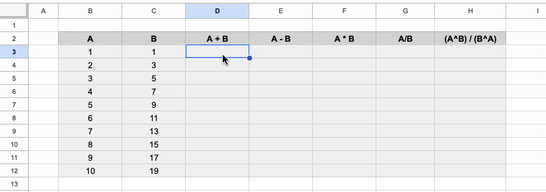
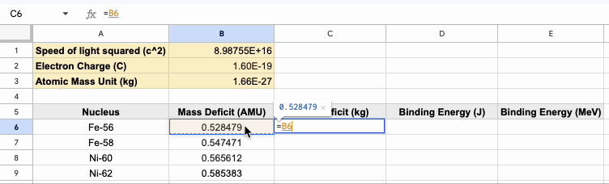
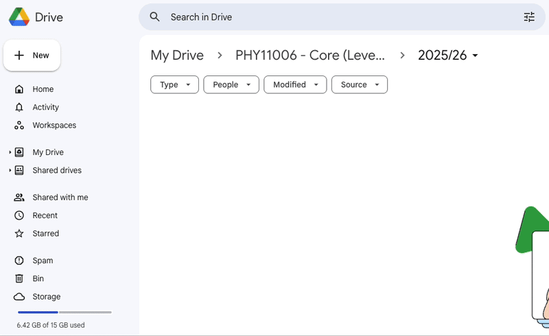

Performing Calculations with Computers I#
Learning Objectives#
By the end of this session, you should be able to:
Understand why computers are valuable tools for performing calculations and analysis.
Use a variety of computational tools to perform numerical and symbolic calculations.
Navigate and utilize Jupyter notebooks using Google Colab.
Apply computational thinking and basic programming skills to solve physics-related problems.
Why Should Scientists Use Computers?#
As scientists, we often need to analyze data, test predictions, simulate systems, or even just crunch numbers. Sure, you could try to do all this by hand — but it wouldn’t take long before you ran into problems.
Let’s take a closer look at what computers bring to the table:
Data Analysis: Imagine you’re working with a dataset from an experiment — say, thousands of measurements from a particle detector. Analysing all of that by hand would be incredibly slow and error-prone. With a computer, you can quickly process the data, apply statistical tools, and even spot trends visually using plots.
Visualization: Physics often involves relationships between quantities that are easier to understand when visualized — like plotting velocity vs. time. Computers can generate accurate and beautiful graphs in seconds, helping you interpret results far more effectively.
Control Systems: Computers can be used to automate and control lab equipment — for example, setting up a feedback loop to stabilize the temperature of a sample. This kind of precision and responsiveness is almost impossible to do manually.
Simulation: Want to understand how galaxies form, or how particles behave in a magnetic field? You can write a computer program to simulate these systems and run them under different conditions. This allows you to explore “what if” questions that would be impossible (or unsafe!) to test in a real lab.
Why Not Just Use Pen and Paper?#
It’s totally possible to do most of these tasks the old-fashioned way. But that approach has some major downsides:
Humans are prone to mistakes
It’s easy to misread a digit (say, writing3.4456123as3.4456213), forget a negative sign, or drop a bracket in a long equation. These little errors can completely throw off your results.
Humans are slow
Say I gave you a table of 1,000 numbers and asked you to square each one, take the square root of the result, and then average the values. You could do it — but it would take hours. Now imagine I told you partway through that the inputs were slightly wrong and you needed to start over… It is clear why we might want to use a computer for this task.
Repetitive tasks are boring
No one wants to solve the same equation a million times with different inputs. Computers, on the other hand, are perfectly happy to do just that — and they’ll do it in milliseconds.
To summarise, computers are:
Fast – They can perform calculations millions of times faster than we can.
Accurate – Once programmed correctly, they won’t make careless mistakes.
Repeatable – They can run the same task over and over without complaint.
Flexible – Need to change one input or try a different model? No problem — just tweak a line of code.
Computers as Calculators#
As an exercise to get to grips with a few of the different computing tools we can use to perform calculations, we will complete a series of exercises using two different tools: Google Sheets and a Jupyter Notebook on Google Collab.
The exercises to complete this session are provided following the overview of the tools you will be using.
Google Sheets#
Google sheets is an online spreadsheet program (like Microsoft Excel) that can be used to efficiently perform calculations and visualise trends in the form of graphs. Numbers can be directly entered into cells and calculations can be performed using these numbers by writing a formula that references the cell. When performing a calculation in a cell, you must begin the formula with an equals sign. An advantage of using a spreadsheet is that you only need to type a formula once to perform many calculations.
An example of the way we can perform calculations is provided in the GIF below:

Built into Google Sheets are many pre-made functions that can perform calculations for you, for example:
=average(A1:A4) can be used to determine the average value of the numbers stored in cells A1 to A4) .
=sum(A1:A4) can be used to determine the total value of the numbers in cells A1 to A4).
=log(A1,10) will calculate the log (base 10) of the number in cell A1.
You can search for any of the functions you may need here. The documentation tells you what a function does and even provides examples of how to use them if you are unsure.
In many instances we may want to use the value stored in one cell in multiple calculations. For example, in the gif below I want to determine the binding energy of various nuclei from their mass deficits. The mass deficit is given in units of AMU and I want to get the binding energy in MeV. I could easily do this conversion by remembering that \(1\,\text{amu} = 931.5\, \text{MeV}\,\text{c}^2\), but to show multiple examples of using fixed variables, I will convert from amu to kg to J to MeV. I do this by fixing the cells in my formulas using dollar signs:

Python#
One of the skills that you will learn over the course of this block is how to use Python. Python is a high-level programming language that can be used in web development, task automation, data analysis and visualisation, and many more activities. It is a widely used language in science as it is freely available, open source and very flexible in the way that it can be used.
If you would like to install Python onto your own computer, the easiest way to do this is by downloading Anaconda. Installation is simple and once complete you will have access to Python from your computer’s terminal or by opening Anaconda. Within Anaconda you can use many other Python based programs such as SpyderIDE or Jupyter Notebooks etc.
When using python we can start to type in basic python commands or return the answers to basic calculations. The mathematical operations are similar those used in Google Sheets (add is “+”, and divide is “/” etc.), however there are some differences, for example, to raise something to the power in Python we use “**” rather than “^”.* Take a look at the examples below:
5+3
8
4*5
20
3**2
9
In many cases we want to save information to be used later. This can be achieved using a variable (more on this next week). You may assign a variable a value in a python script by typing the name of the variable and setting it equal to its value (e.g. A = 6). This can now be used in calculations. We can reassign the value of the variable at any time by simply setting it equal to another value.
A = 6
print(A)
6
print(A + 3)
9
A = A + 1
print(A)
7
Jupyter Notebooks#
There are lots of ways we can get a computer to read and execute the Python code we write, but a great tool to use is the Jupyter Notebook. One of the key advantages of using a Jupyter notebook is that we can execute blocks of code and see the output before running another block. Additionally, the notebook can be interlaced with text and equations in a clear way that does not interfere with our code. This makes it easier to understand what our code is doing or how it is related to the topic we are covering. These notebooks will form the basis of how Python is taught in these workshops.
Although we can save Jupyter notebooks locally on our computer (included in Anaconda), we can also use them in the cloud using Google Colaboratory (or Colab). Colab is an online tool that will be used to share the notebooks used in these sessions and where you are free to do your work.
Should you ever want to create a new notebook, you can do so from your Google Drive. Simply press the “+New” button and then find Colaboratory. Once you have created your notebook, you can enter code into a cell and execute it by pressing “run” in the toolbar. The output will be shown directly below the cell.

Spend some time familiarising yourself with this new coding environment. Perform some calculations and run the cells and see what they output. Try to get into the habit of organising different sections of your code in different cells - tidy code is much easier to read and debug, and by splitting sections of code into different cells you will be able to quickly identify where your code may be breaking. Important note: the computer will read and execute your code line by line in order - ensure that any terms used are defined before they are called.
Important
Each week Jupyter notebooks containing the session activities will be made avaliable to you via links. You must download a copy of the notebook to your Google Drive. You will not be able to work in the linked template.
To organise your work:
create a folder called “Skills Workshops: Computing”
Each week, create a sub-folder called “Semester 1, Week X”.
Keep your work organised in these folders.
Activities#
The following activities have been designed for you to get to grips with the two tools discussed above. The problems provided are related to the content you have covered in A-level mechanics and possibly recapped in the mechanics lecture this week.
Downloads
To get started on these activities, open the Google Sheet and Colaboratory via the links and save a copy to your drive.
1. Google Sheets#
A projectile is launched with an initial velocity of \(17.05 \,ms^{-1}\) at an angle of \(63\) degrees relative to the horizontal plane. The projectile follows a parabolic path according to:
Determine the maximum vertical height reached by the projectile using SUVAT.
Determine the maximum horizontal distance the projectile travels.
Use the projectile equation to determine the height of the projectile as a function of the horizontal distance travelled by the projectile up to the maximum horizontal distance travelled (to the nearest m). Start at a horizontal displacement of \(0\,m\) and increase in increments of \(1\,m\).
Plot the height of the projectile as a function of the horizontal distance travelled.
Hint
Google Sheets requires angles to be in radians. For part 4, the easiest way to do this in Google Sheets is to highlight your x and y data and select the “insert chart” icon from the toolbar.
2. Jupyter Notebook#
This time a projectile is launched with an initial velocity of \(120 \, ms^{-1}\) at an angle of \(47\) degrees relative to the horizontal plane of a platform that is 11\(\,\)m above the ground. Once again:
Determine the maximum vertical height reached by the projectile (relative to the ground).
Calculate the maximum horizontal distance that the projectile travels.
Use the projectile equation to determine the height of the projectile as a function of the horizontal distance travelled by the projectile (use 5 horizontal distances \(x = 200\,m, 500\,m, 800\,m, 1100\,m\) and \(1400\,m\))
Hint
Use np.tan() and np.cos() in the Jupyter notebook where necessary and again use radians - more on this later!